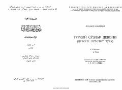

DLMahmud Koshg‘ariyning mashhur «Devonu lug‘otit turk» asarining ikkinchi jildi.
Ushbu nashr buyuk tilshunos olim Mahmud Koshg‘ariyning mashhur «Devonu lug‘otit turk» asarining ikkinchi jildi bo‘lib, asosan fe'llar va ularning izohlarini o‘z ichiga oladi. Kitobda turkiy tillarning grammatik qoidalari, fe'l turlari va ularning yasalishi mukammal yoritilgan. Tarjimon va nashrga tayyorlovchi S. M. Mutallibov tomonidan amalga oshirilgan ushbu ilmiy ish qadimgi turkiy til merosini o‘rganishda muhim ahamiyat kasb etadi.